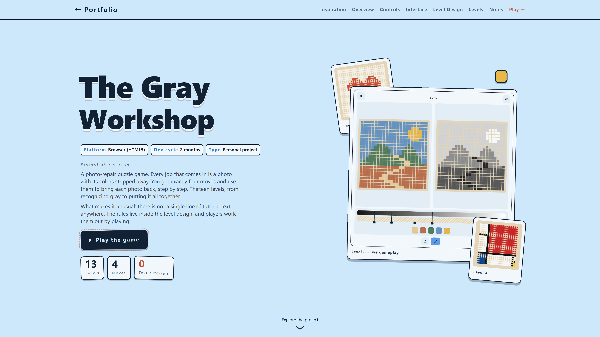
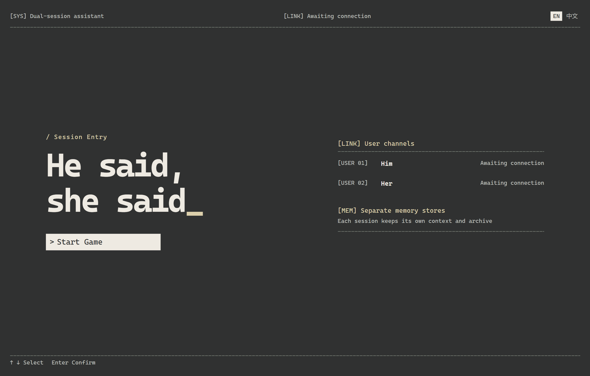
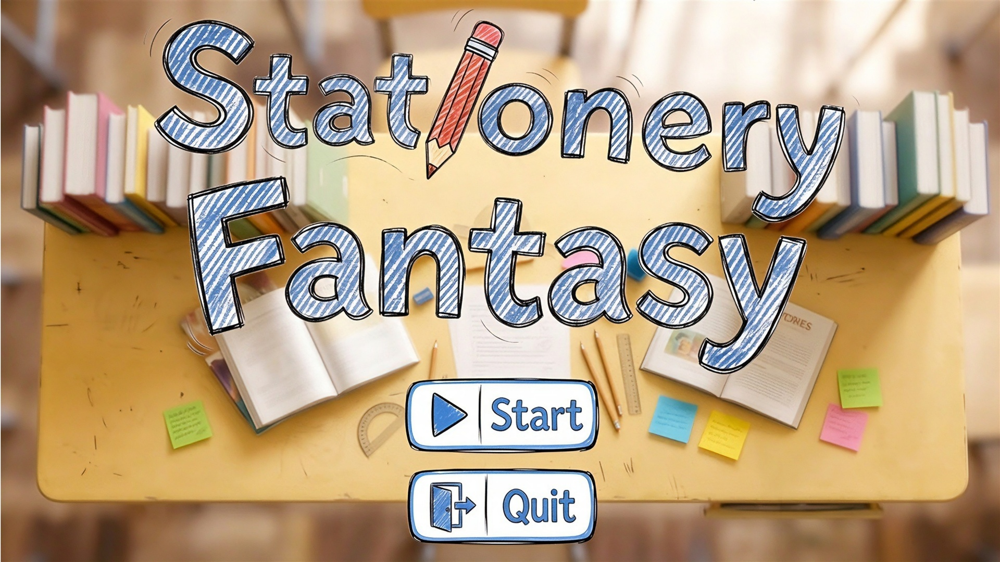

GAME DESIGN & DEVELOPMENT
数字媒体技术本科在读，游戏设计与开发方向。关注玩法机制与叙事的结合，代表作《灰度修理铺》。

一款围绕"色彩与修理"机制的独立游戏，在线上可以完整试玩，配套设计文书完整可读。

一款以聊天界面展开的叙事游戏：你扮演情侣二人的 AI 助手，分别听两边的说法，回复影响故事走向。

我的第一个游戏项目，Unity 制作的三关横版射击游戏；设计文书整理中。
唐浩翔（Jesse），数字媒体技术专业本科在读。
目前正在准备研究生申请，欢迎通过邮箱与我联系。
申请、合作或只是聊聊游戏设计，都欢迎直接写信给我，我会认真回复每一封。